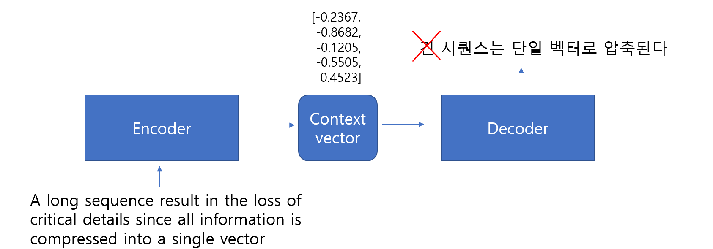

Attention enhances Seq2Seq models by allowing the decoder to selectively focus on different parts of the input sequence at each decoding step
Instead of relying on a fixed-length context vector from the encoder, the decoder computes a dynamic context vector by weighting the encoder’s hidden states based on their relevance to the current decoding step.
9.1.1 Fixed-length Context Vector
In traditional Seq2Seq models, the encoder compresses the entire input sequence into a single vector called the context vector, which the decoder uses to generate the output sequence.
\[
c = h_T \quad \text{or} \quad c = f(h_1, h_2, ..., h_T)
\]
This design introduces several limitations.
Information Bottleneck
All input information must be compressed into a single vector.
For long sequences, important fine-grained details are lost during this compression.
Vanishing Context
As the sequence length increases, earlier tokens have less influence on the final hidden state.
This is linked to the vanishing gradient problem in RNNs.
Difficulty in Aligning Input and Output
There is no direct alignment between specific input tokens and their corresponding output tokens.
The decoder must rely solely on the compressed context, without knowing which part of the input is relevant at each step.

9.1.2 Attention Mechanism
The attention mechanism addresses these issues by dynamically focusing on different parts of the input sequence for each output token.
Dynamic Context
Instead of relying on a single fixed-length vector, the context vector is dynamically computed by “attending” to specific encoder hidden states.
Better Handling of Long Sequences
Attention allows the decoder to retrieve relevant information from any part of the input, regardless of sequence length.
Alignment Between Input and Output
Attention naturally creates alignments, making it easier to map input tokens to corresponding output tokens.
9.1.3 Attention Mechanism
The attention mechanism solves the fixed-length bottleneck by allowing the decoder to dynamically focus on different parts of the encoder’s output for each generated token.
9.1.3.1 Key Ideas
Dynamic Context
The context vector ( c_t ) is not fixed.
It is computed at each decoding step by taking a weighted sum of all encoder hidden states:
\[
c_t = \sum_i \alpha_{t,i} h_i
\]
Attention Weights Each weight ( _{t,i} ) measures the relevance between the current decoder state ( s_t ) (query) and encoder state ( h_i ) (key):
\[
\alpha_{t,i} = \text{softmax}(s_t^\top h_i)
\]
Better Handling of Long Sequences
The decoder can “attend” to any part of the input regardless of sequence length.
Alignment Between Input and Output
Attention naturally aligns input and output tokens by highlighting relevant positions in the encoder states.